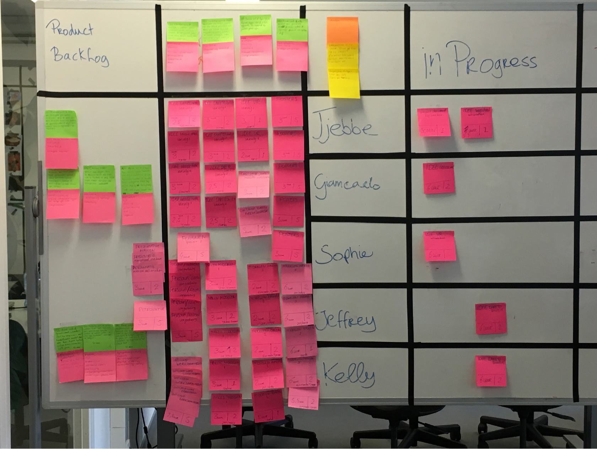

Scrum Leerdoelen
In de eerste weken hebben we een Scrum workshop gehad. Hier heb ik de basisinformatie en regels gekregen van Scrum. We moesten voor het eerst gaan Scrummen en hiervoor hadden we kennis nodig. Ik de workshop was er een aantal oefening en analyse aanwezig. Ik de volgende link kunt uw mijn workshop oefening zien: Scrum Workshop
Na de workshop
Na de workshop van Scrum ging ik een Scrum basics cursus volgen om een beter beeld te krijgen hoe het theoretisch in elkaar zat en wanneer gebruikt een developer Scrum. Door deze cursus snap ik nu de functie van scrum beter en ook waarom een bedrijf scrum gebruikt. Om me zelf beter op pijl te houden zal ik notities van alle belangrijke scrum onderdelen maken. Zodat ik scherp blijf in de theorie
Waterval methode
De watervalmethode is een methode voor softwareontwikkeling (een proces voor de verwezenlijking van software), waarin de ontwikkeling regelmatig vloeiend naar beneden loopt (als een waterval). De ontwikkeling loopt door een aantal fasen, namelijk: definitiestudie/analyse, basisontwerp, technisch ontwerp/detailontwerp, bouw, testen, integratie en beheer en onderhoud. Met deze methode hoopten de informaticabedrijven meer duidelijkheid te krijgen in hun software-projecten. Het waterval model is afgeleid van de traditionele manier van werken in grote projecten in de constructiebouw. De bedoeling van deze manier van werken is dat het project in verschillende fasen wordt opgedeeld. Men start met fase 1 en begint niet eerder met fase 2 dan wanneer fase 1 is afgesloten. En wanneer in een van de fasen een fout ontdekt wordt, gaat men helemaal terug om die fase te corrigeren en de daaropvolgende stappen opnieuw uit te voeren.
Sprint 1
In de eerste sprint was ik de Scrum Master omdat ik een cursus hiervoor heb gevolgd. Ik had als taak dan om het hele Scrum bord in te richten met behulp van mijn scrum team omdat het eerste keer was. Verder was het proces in sprint 1 zeer informatief en leerzaam omdat we aantal fouten gemaakt die we dan moesten verbeteren en meenemen naar sprint 2 na de Demo en retrospective. Verder was de rol als Scrum master best lastig omdat je een heel team moet sturen terwijl je nog aan het leren ben. Maar het is wel gelukt. Hieronder scrum bord in Sprint 1.
Sprint 1 Retrospective
Na de demo van sprint 1, hebben we met zijn allen teruggekeken op de eerste sprint. Hieruit is gebleken dat we allemaal vinden dat we het eigenlijk best goed gedaan hebben. We hebben een goed concept waar we nog veel dieper in kunnen gaan. Deze groep doet goed zijn best en we proberen scrum goed toe te passen. Waar we achter gekomen zijn is dat we scrum niet helemaal goed uitvoerden. Bijvoorbeeld de taken van de hele dag hadden we niet op het bord hangen. We hadden alleen de taak die op dat moment uitgevoerd werd ophangen. Daarnaast waren de uren die een taak in beslag nam niet goed genoeg zichtbaar. En we hebben een paar zieken gehad En kwamen dus een beetje in de knel met de planning. We willen dus proberen een betere planning te maken, met duidelijke taken. Wat we dus nu gedaan hebben is een berekening gemaakt van alle uren die er beschikbaar zijn. Ook hebben we een takenlijst gemaakt met taken die gedaan moeten worden. Daarnaast hebben we ook rekening gehouden met alle workshop uren, pauzes en evt. ziekte. We houden daardoor een netto aantal uren over en daarbij hebben we taken aan een aantal uren gehangen. Scrum begint nu dus echt wel aardig te lopen.
Sprint 2
In het begin van sprint 2 hebben we een nieuwe planning gemaakt voor sprint 2. Voor de vakantie hadden we al een tijdsindeling gemaakt om te kijken hoeveel uur iedereen heeft per dag. Daarna hebben we het scrum bord gevuld met taken die we per persoon kunnen uitvoeren. Verder gaan we de ideeën van sprint 1 verder uitwerken om daar een beter idee van te maken. Later testen we die met onze personas om te kijken dat het aansluit met de doelgroep. Mocht dat niet het geval zijn dan kunnen we door middel van nieuwe user stories, nieuwe ideeën ontwikkelen. Verder hebben de tijdsindeling beter gedaan dan in sprint 1. Om de uren te berekenen hebben we rekening gehouden met een aantal factoren. We hebben 10% ziekte uren gecalculeerd van de totaal beschikbare uren. Daarnaast hebben we het spoorboekje erbij gehouden voor de workshops. We hebben van vorige sprint geleerd dat wanneer er ineens een workshop is, de planning niet meer goed loopt dus elke workshop is in de globale planning meegenomen. We hebben hier de uren van het spoorboekje voor aan gehouden. Daarnaast hebben we ook rekening gehouden met de opdrachten uit de workshops. In week 12 gaan we verder om alle ideeën verder uit te werken en middelen maken voor de ideeën. Verder gaan we op maandag het testplan uitwerken om uit eindelijk te testen. Voor alle ideeën hebben we de documentatie verder uitgewerkt om te kijken hoe we het gaan uitvoeren mocht het idee reëel worden. We hebben het VR-idee laten vallen, dit hebben we gedaan omdat het idee het minst goed paste bij ons concept. De andere paste beter en kunnen we beter uitwerken. We willen de andere ideeën, één geheel van maken zodat ze samen 1 campagne wordt.
Sprint 2 Retrospective
Net voor de demo van sprint 2, hebben we met al onze groepsleden teruggekeken op de tweede sprint. Als we eerlijk moeten zijn hebben we in de tweede sprint minder goed gepresteerd dan in de eerste sprint. De uitingen hebben we beter uitgewerkt maar hebben de call to action met de customer journey niet al helemaal goed uitgewerkt. In de tweede sprint hebben we een andere aanpak gedaan op scrum. We hebben duidelijkere taken opgeschreven met ook duidelijk erbij hoeveel mensen eraan werken, wie eraan werkt en hoe lang diegene daarmee bezig is. Waar we achter kwamen is dat het toch niet heel fijn werkt op deze manier van plannen. In sprint 3 gaan we proberen om de planning zo aan te pakken, dat een taak af moet zijn op die specifieke tijd en dan maakt het niet uit wanneer je dat doet. Zo wordt het luchtiger om te werken in het groepsverband. Qua uren berekening hebben we hetzelfde gedaan als in sprint 2. De uren kwamen goed uit
Sprint 3
De tijdsindeling voor sprint 3 is bijna hetzelfde als voor sprint 2. Wat veranderd is, is dat er in sprint 3 bijna tot geen workshop meer gegeven worden waardoor we daar mee uren voor krijgen. We hebben dezelfde ziekte uren gekoppeld en op de woensdagen nemen we de tijd om voor het leerportfolio te werken.
Sprint 3 Retrospective
Tijdens de retrospective hebben we gekeken hoe de afgelopen sprint gegaan is. Er zijn veel punten verbeterd vergeleken met sprint 2. Zo hebben we een beter beeld over hoeveel tijd we hebben voor een taak. We hadden meer gedaan omdat we anders gingen werken. We wisten daarbij ook beter wat moesten doen omdat we nu betere concrete taken hadden. We hebben nu meer taakgericht gewerkt ook omdat we meer tijd hebben ingedeeld voor de taken. Wat dan wel in min puntje is dat we niet goed de persona’s bij de ideeën hebben betrokken. Dit is de laatste sprint van de proftaak. Als we terugkijken naar alle sprints vinden wij dat alles goed is gegaan. Soms hadden we het niet goed toegepast maar daar hebben we over gereflecteerd.
Reflectie
Begin deze semester wist ik al dat wij zouden scrummen voor deze proftaak. Dus ik wilde voor mezelf oefenen met plannen. Want scrum is heel taakgericht en planning is belangrijk. Ik wist niet veel van scrum maar ik wilde wel de uitdaging aan. Deze semester wilde ik meer op mijn planning en taakverdeling letten omdat mijn planning in semester was niet zo goed. We hadden een vrij project in semester drie dus ik moest alles zelf plannen en bij mij ging het heel mis. Ik wilde ook een leider rol spelen deze semester dat ik iets strenger kan beoordelen. Als leider moet ik niet mezelf maar iedereen in de gaten houden. In de eerste weken moesten wij nog niet scrummen maar alleen concepten. We hadden een workshop scrum gehad die voor mij niet heel duidelijk was. Want mijn gevonden informatie online vond ik niet vertrouwbaar genoeg. Bijvoorbeeld scrum rollen waar niet alleen, scrum master, scrum team en product owner er was ook blijkbaar stakehoulders. Online kwam stakehoulders niet voor waar ik op zocht dus ik heb gekozen om een cursus op udemy te volgen om mezelf scherp te maken op het gebied van scrum want ik wilde scrum master zijn voor sprint 1. Dus de avond na de scrum workshop ben ik voor een uur in scrum gedoken om beter verstand van te krijgen. Er kwam tijdens mijn cursus een andere partij bij scrum en dat was users. Tijdens de workshop op school hadden wij het nooit over users gehad. Door de heb ik nu een betere basiskennis van Scrum.
Mijn eerste rol was Scrum master, eerste maandag van Sprint een wouw Kelly Scrum master zijn wegens persoonlijk leerdoel afspraken die zei heeft gemaakt met Dick. Ik heb dan mijn taak als Scrum Master aan haar overgedragen. Op dag van sprint wilde Kelly geen scrum master meer zijn wegens persoonlijk ziekte redenen en afwezigheid. Dus ik ben weer scrum master geworden voor Sprint 1. Ik vond het onhandig dat we 2x van sprint master veranderen maar het onze eerste keer. In sprint hadden we moeite met user story’s maken. Dus ik ben online naar voorbeelden gaan kijken. Uiteindelijk na “Trail and Error” kan ik nu een user story maken. Het concept gedeelte van sprint een ging voor mij persoonlijk goed. We hadden wel te veel uren gepland voor 1 sprint. Maar uiteindelijk waren we tevreden met wat we hadden voor sprint 1 demo. Onze concept waren ook goed ontvangen bij fresheads en we kregen zelf complimenten bij de docenten. Voor het eerste keer retrospective was ook een uitdaging en een leerproces omdat we best veel fouten hadden ontdekt tijdens de retrospective als te veel plannen, fouten in de user story’s en te lang gewacht om de retrospective te doen.
Mijn ervaring als scrum master in sprint 1 was dat scrum niet het juiste methode was voor een activatie campagne was scrum was meer voor software development. Voor activatie campagne een andere methode pakken die meer gericht is voor een campagne. Na de Retrospective ging we sprint 2 plannen hier was ik de scrum master niet meer maar ik behoorde tot de scrum team. Ik moest iemand anders de kans geven om scrum master te zijn. Sprint twee was voor mijn gevoel goed, we liepen iets voor vergeleken met de andere groepen uit de klas. We ging dan de diepgang van onze concept bepalen en vastleggen. Verder hebben wij prototypes gemaakt. Planning zelf was rustiger dan sprint 1 omdat wij vorige sprint een te uitgebreide planning gemaakt. Dus voor mijn gevoel ging het goed tot wij de presentatie moesten maken en Sophie vond dat wij niet genoeg hadden gedaan vergeleken met de vorige sprint. Toen heb ik het ingegrepen. Haar argument klopte niet en dat wij best veel hadden en dat was diepgang. Zij was gewoon aan het stressen over niks. We hadden wel haar argument mee genomen voor sprint 3 voor de planning. Ik heb in sprint 2 geleerd dat het hoeveelheid werk is niet altijd goed genoeg voor iedereen. Iedereen heeft een andere manier van plannen en werk die bij past. Voor mijn was het hele dag aan een stuk door werken fijn maar voor iemand als Jeffrey weer niet. Dus ik had alle argumenten en mening van iedereen meegenomen naar sprint 3. Ik ben in sprint 3 de proftaak leider. Dus ik moest voor het belang van mijn team zorgen. We hebben nieuwe afspraken gemaakt en ook een betere planning zodat het duidelijk en goed is voor iedereen. Verder zijn wij gaan naar hoe wij onze producten zo snel en zo goed mogelijk konden afronden omdat er nog veel op de planning stond voor school zelf als portfolio en development. Deze semester ging mijn planning iets beter dan semester 3 maar nog niet waar ik wil zijn. Ik zou volgende keer een andere planning en werk methode pakken om te kijken om het voor mij werkt. Ik zou dit altijd doen tot dat ik de juist plan methode vind. Want scrum is niet mijn ideale planning methode.